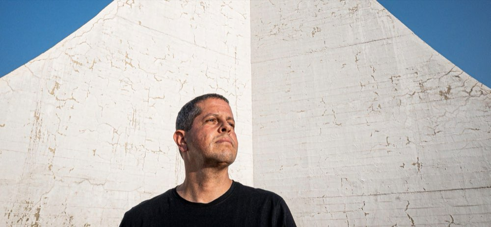

About Bento Viana
Why I Photograph
Photography begins with observation.
The way light moves across a surface.
The way a space reveals itself.
The way architecture shapes experience.
I am fascinated by the relationship between design, atmosphere, and human perception.
A photograph can describe a building.
A meaningful photograph can communicate something more.
Its character.
Its intention.
Its presence.
That is why I photograph.
Not simply to document what was built.
But to reveal the story behind it.

How I See Architecture
I believe architecture exists in relationship.
To its landscape.
To its light.
To the people who move through it.
A building is never an isolated object.
It belongs to a larger story.
My approach is to photograph architecture as part of that story, revealing not only its form, but its connection to place, atmosphere, and experience.
The strongest architectural images do more than describe a project.
They help people understand why it matters.

Published work
Brasília, in print
- Brasília Seen From the Sky / Brasília Vista do Céu
- Do Céu, Brasília
- #monumento61